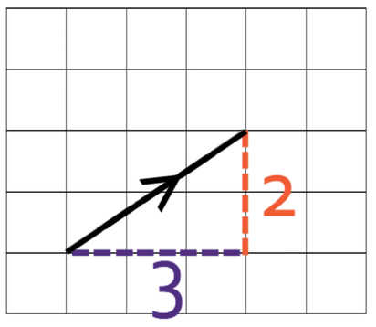
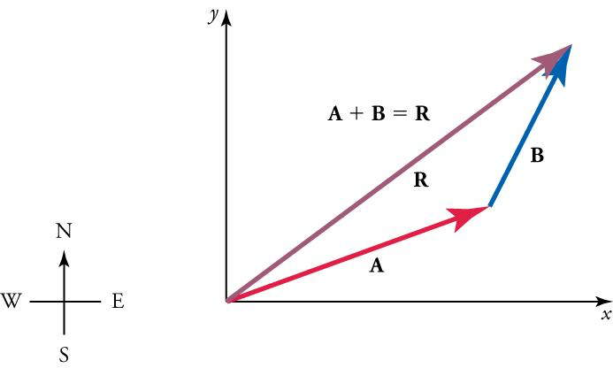
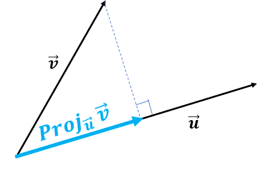

Essential Mathematics
Kevin’s PSPE Resources
This chapter is a reference for the essentials of Mathematics for Political Science, mainly consisting of linear algebra, calculus, and basic probability. This reference is not meant to teach these concepts. If you want a good math course for political scientists/social scientists, see David Siegel’s youtube channel (scroll through the playlists).
Use the right sidebar for easy navigation.
Vectors and Matrices
Vector Algebra
A scalar is any single element or component, like a real number (ex. \(x_1 \in \mathbb{R}\)). A vector is a collection of scalars: \((x_1 \ x_2 \ x_3 \ x_4)\). Each scalar is considered a element/component.
Vectors can be visualised graphically. Each element corresponds to a distance in a direction. For example, take the vector \((3 \ 2)\). Graphically:

The dimension of a vector is the number of components/scalars/elements in the vector. If a vector has 3 dimensions, the graphical representation will be in 3 dimensions, and so on.
The norm of a vector is its length (when thinking geometrically):
\[ || \mathbf{x}|| = \sqrt{x_1^2 + x_2^2 + \dots + x_n^2} \]
Normalizing a vector is scalar multiplying (see below) the vector by \(1/||\mathbf{x} ||\). This results in the norm of the vector equaling 1. This can be useful if you want to standardise and compare vectors.
Vector addition and subtraction is done just by adding the respective elements to each other:
\[ \begin{pmatrix} 1 \\ 2 \end{pmatrix} + \begin{pmatrix} 3 \\ 4 \end{pmatrix} = \begin{pmatrix} 1+3 \\ 2+4 \end{pmatrix} = \begin{pmatrix} 4 \\ 6 \end{pmatrix} \]
Vector scalar multiplication is done by multiplying all elements of the vector by the scalar:
\[ 4 \times \begin{pmatrix} 1 \\ 2 \end{pmatrix} = \begin{pmatrix} 4 \times 1 \\ 4 \times 2 \end{pmatrix} = \begin{pmatrix} 4 \\ 8 \end{pmatrix} \]
Scalar product, also known as dot product, takes two vectors and creates a scalar.
\[ \mathbf a \cdot \mathbf b = \sum_i a_ib_i = a_1 b_1 + a_2 b_2+ \dots a_n b_n \]
- Essentially, multiply each respective element with each other. Then sum all of the products.
Let us do an example of scalar product:
\[ \begin{pmatrix} 2 \\ 3 \end{pmatrix} \cdot \begin{pmatrix} 4 \\ 5 \end{pmatrix} \]
We multiply each respective element with each other, then sum all of the products:
\[ 2 \times 4 + 3 \times 5 = 8 + 15 = 23 \]
Vector addition can be viewed graphically. Take two 2-dimensional vectors \(\mathbf A\) and \(\mathbf B\):

Vector Scalar Multiplication can also be visualised graphically: it just multiplies the length of the vector by the scalar (and if the scalar is negative, the direction switches 180 degrees).
Dot product calculates the projection/shadow of vector \(\mathbf a\) on vector \(\mathbf b\). In the figure below, the dot product calcualtes the length of the blue-highlighted line segment:

From here, we can tell if the two vectors are perpendicular, then the dot product would be 0. This is useful for measures of similarity/correlation.
Types of Matrices
A matrix is a collection of scalars, that are put in a \(n \times m\) order with \(n\) number of rows, and \(m\) number of columns. Each element by the matrix can be denoted \(a_{ij}\), which is the element in the \(i\)th row and \(j\)th column:
\[ \mathbf A_{2 \times 3} = \begin{pmatrix} a_{11} & a_{12} & a_{13} \\ a_{21} & a_{22} & a_{23} \end{pmatrix} \]
There are several very common types of matrices that you need to know.
Square Matrix is a matrix that have an equal number of rows and columns.
\[ \mathbf A_{2 \times 2} = \begin{pmatrix} a_{11} & a_{12} \\ a_{21} & a_{22} \end{pmatrix} \]
These are useful because many matrix manipulations, like inversions and determinants.
Zero Matrix is a square matrix with all 0’s.
Diagonal matrices only have elements along the top-left bottom-right diagonal.
\[ \mathbf A_{3 \times 3} = \begin{pmatrix} a_{11} & 0 & 0 \\ 0 & a_{22} & 0 \\ 0 & 0 & a_{33} \\ \end{pmatrix} \]
An identity matrix (notated \(\mathbf I\))is a diagonal matrix, but all the diagonal elements equal 1:
\[ \mathbf I_{2 \times 2} = \begin{pmatrix} 1 & 0 \\ 0 & 1 \end{pmatrix} \]
- Any matrix times \(\mathbf I\) equals itself (like a 1 in normal multiplication).
A Lower/Upper Triangular Matrix is a matrix where only has values above/below the diagonal. For example, the following is a lower triangular matrix:
\[ \mathbf A_{3 \times 3} = \begin{pmatrix} 1 & 0 & 0 \\ 3 & 4 & 0 \\ 3 & 3 & 4 \end{pmatrix} \]
A submatrix is a matrix if you were to remove a row and a column (that is specified by an element).
For example, take this 3 by 3 matrix:
\[ \mathbf A_{3 \times 3} = \begin{pmatrix} a_{11} & a_{12} & a_{13} \\ a_{21} & a_{22} & a_{23} \\ a_{31} & a_{32} & a_{33} \end{pmatrix} \]
Let us find the submatrix of \(a_{21}\). This means we will eliminate the 2nd row, and 1st column:
\[ \mathbf A_{2 \times 2} = \begin{pmatrix} a_{12} & a_{13} \\ a_{32} & a_{33} \end{pmatrix} \]
A permutation matrix is a matrix that only has one non-zero element in each row and column.
\[ \mathbf A_{3 \times 3} = \begin{pmatrix} 1 & 0 & 0 \\ 0 & 0 & 1 \\ 0 & 1 & 0 \end{pmatrix} \]
The identity matrix is a permutation matrix.
A singular matrix is one who’s determinant is zero. These cannot be inverted.
A non-singular matrix is one who’s determinant is not zero. These can be inverted. For non-singular matrices:
\[ AA^{-1} = I \]
A block or partitioned matrix is a matrix which contains matrices within.
\[ \mathbf A_{4 \times 4} = \begin{pmatrix} \mathbf A_{2 \times 2} & \mathbf B_{2 \times 2} \\ \mathbf C_{2 \times 2} & \mathbf D_{2 \times 2} \end{pmatrix} \]
- Note how the block matrix is 4 by 4, since if we expand out each matrix within, we would get a 4 by 4 matrix.
A block diagonal matrix is a block/partitioned matrix with only matrices on its diagonal:
\[ \mathbf A_{4 \times 4} = \begin{pmatrix} \mathbf A_{2 \times 2} & 0 \\ 0 & \mathbf D_{2 \times 2} \end{pmatrix} \]
An orthogonal matrix is one with columns perpendicular to each other (when treating each column as a vector). In other words, the dot product of any two columns is zero.
\[ \mathbf A_{3 \times 3} = \begin{pmatrix} 1 & 0 & 0 \\ 0 & 0 & 5 \\ 0 & 3 & 0 \end{pmatrix} \]
- The identity matrix is also orthogonal.
- Any matrix with one element in each row and column will be orthogonal.
An orthonormal matrix is an orthogonal matrix but the lengths/norms of all the columns is 1:
\[ \mathbf A_{3 \times 3} = \begin{pmatrix} 1 & 0 & 0 \\ 0 & 0 & 1 \\ 0 & 1 & 0 \end{pmatrix} \]
A symmetrical matrix is one where the transpose is equivalent to itself:
\[ \mathbf A^\mathsf{T} = \mathbf A \]
An Idempotent matrix is one where when multiplied to itself, it produces itself:
\[ \mathbf{AA} = \mathbf A \]
Matrix Transpose and Trace
The matrix transpose is a matrix flipped along its diagonal. It is denoted either \(\mathbf A^\mathsf{T}\) or \(\mathbf A '\). In other words, the rows and column locations of each element are inverted (essentially elements \(a^\mathsf{T}_{ij} = a_{ji}\)):
\[ \begin{pmatrix} 2 & 3 & 5 \\ 1 & 4 & 6 \end{pmatrix}^\mathsf{T} = \begin{pmatrix} 2 & 1 \\ 3 & 4 \\ 5 & 6 \end{pmatrix} \]
- Notice how the first column became the first row, the second column became the second row.
- You can also get the transpose of a vector.
The Vector Property says that the dot product of vectors can be written with transposes:
\[ \mathbf a \cdot \mathbf b = \mathbf a^\mathsf{T}\mathbf b \]
The Inverse Property says that the transpose of a transpose is the original matrix:
\[ \left(\mathbf A^\mathsf{T} \right)^\mathsf{T} = \mathbf A \]
The Addition Property states that the transpose of a sum of two matrices, is equal to the individual transposes of both matrices added together:
\[ (\mathbf A + \mathbf B)^\mathsf{T} = \mathbf A^\mathsf{T} + \mathbf B^\mathsf{T} = \mathbf B^\mathsf{T} + \mathbf A^\mathsf{T} \]
The Multiplication Property says the following (note the order of multiplication):
\[ ( \mathbf{AB})^\mathsf{T} = \mathbf B^\mathsf{T} \mathbf A^\mathsf{T} \]
The Symmetrical Property says that a matrix that is symmetrical does not change when inversed:
\[ \mathbf A^\mathsf{T} = \mathbf A \quad \text{s.t.} \quad \mathbf A \text{ is symmetrical} \]
The Inverse Transpose Property says the following about inverses and transposes:
\[ \left( \mathbf A^{-1} \right)^\mathsf{T} = \left( \mathbf A^\mathsf{T} \right)^{-1} \]
A symmetrical matrix is one where the transpose is equivalent to itself:
\[ \mathbf A^\mathsf{T} = \mathbf A \]
The trace of \(\mathbf A\) is a sum of all diagonal elements. Traces are used in Eigenvalues.
\[ Tr(\mathbf A) = \sum_i a_{ii} = a_{11} + a_{22} + \dots \]
The Addition Property of traces states that the trace of the sum of two matrices is equivalent to the sum of the traces of each individual matrix:
\[ Tr(\mathbf A + \mathbf B) =Tr(\mathbf A) + Tr(\mathbf B) = Tr(\mathbf B) + Tr(\mathbf A) \]
The Transpose Property says the trace of the transpose is equal to the trace of the original (since the diagonal remains the same):
\[ Tr(\mathbf A^\mathsf{T}) = Tr(\mathbf A) \]
The Multiplication Property says that the trace of multiplication has the commutative property (only for two matrices):
\[ Tr(\mathbf{AB}) = Tr(\mathbf{BA}) \]
Matrix Algebra
Matrix addition/subtraction is the same as vector addition - add the respective elements together:
\[ \begin{pmatrix} 1 & 2 \\ 3 & 4 \end{pmatrix} + \begin{pmatrix} 5 & 6 \\ 7 & 8 \end{pmatrix} = \begin{pmatrix} 1 + 5 & 2 +6 \\ 3+7 & 4 + 8 \end{pmatrix} = \begin{pmatrix} 6 & 8 \\ 10 & 12 \end{pmatrix} \]
Matrix scalar multiplication is the same as vector scalar multiplication - multiply each element by the scalar:
\[ 3 \times \begin{pmatrix} 1 & 2 \\ 3 & 4 \end{pmatrix} = \begin{pmatrix} 3 \times 1 & 3 \times 2 \\ 3 \times 3 & 3 \times 4 \end{pmatrix} = \begin{pmatrix} 3 & 6 \\ 9 & 12 \end{pmatrix} \]
Matrix Plain Multiplication is a little more complicated. Let us say you want to multiply \(\mathbf A\) and \(\mathbf B\) to get a new matrix \(\mathbf C\). The elements of \(\mathbf C\) are calculated as follows:
\[ c_{ij} = \sum_ka_{ik}b_{kj} = a_{i1}b_{1j} + a_{i2}b_{2j} + a_{i3}b_{3j}\dots \]
In other words, \(c_{ij}\) is the dot product of the \(i\)th row of \(\mathbf A\), and the \(j\)th column of \(\mathbf B\).
Matrix multiplication is only possible when the number of columns in \(\mathbf A\) is equal to the number of rows in \(\mathbf B\). So for example, we can multiply \(\mathbf A_{2 \times 3}\) and \(\mathbf B_{3 \times 4}\). We cannot multiply \(\mathbf A_{2 \times 3}\) and \(\mathbf B_{2 \times 3}\).
The dimensions of product \(\mathbf C\) is the number of rows in \(\mathbf A\) and the number of columns in \(\mathbf B\). So for example, if we multiply \(\mathbf A_{2 \times 3}\) and \(\mathbf B_{3 \times 4}\), we will get \(\mathbf C_{2 \times 4}\).
Let us solve the following problem:
\[ \begin{pmatrix} 2 & 1 \\ 3 & 5 \end{pmatrix} \begin{pmatrix} 6 & 1 \\ 2 & 3 \end{pmatrix} = \mathbf C \]
Let us do each dot product for each element of \(\mathbf C\):
- \(c_{11}\) is the dot product of the 1st row of the 1st matrix, and the 1st column of the 2nd matrix: \((2 \ 1) \cdot (6 \ 2)\). That means \(c_{11} = 2 \times 6 + 1 \times 2 = 12+2 = 14\).
- \(c_{12}\) is the dot product of the 1st row of the 1st matrix, and the 2nd column of the 2nd matrix: \((2 \ 1) \cdot (1 \ 3)\). That means \(c_{12} = 2 \times 1 + 1 \times 3 = 2 + 3 = 5\).
- \(c_{21}\) is the dot product of the 2nd row of the 1st matrix, and the 1st column of the 2nd matrix: \((3 \ 5) \cdot (6 \ 2)\). That means \(c_{21} = 3 \times 6 + 5 \times 2 = 18 + 10 = 28\).
- \(c_{22}\) is the dot product of the 2nd row of the 1st matrix, and the 2nd column of the 2nd matrix: \((3 \ 5) \cdot (1 \ 3)\). That means \(c_{22} = 3 \times 1 + 5 \times 3 = 3 + 15 = 18\).
Thus, we now have our answer:
\[ \begin{pmatrix} 2 & 1 \\ 3 & 5 \end{pmatrix} \begin{pmatrix} 6 & 1 \\ 2 & 3 \end{pmatrix} = \begin{pmatrix} 14 & 5 \\ 28 & 18 \end{pmatrix} \]
The Associative property applies to addition/subtraction and multiplication:
\[ \begin{split} & (\mathbf A + \mathbf B) + \mathbf C = \mathbf A + (\mathbf B + \mathbf C) \\ & (\mathbf A \mathbf B)\mathbf C = \mathbf A(\mathbf B \mathbf C) \end{split} \]
The Distributive Property states the following is true:
\[ (\mathbf A + \mathbf B) \mathbf C = \mathbf A \mathbf C + \mathbf B \mathbf C \]
The Commutative Property applies only to addition/subtraction, not multiplication. Commutative property also applies to dot products.
\[ \begin{split} & \mathbf A + \mathbf B = \mathbf B + \mathbf A \\ & \mathbf a \cdot \mathbf b = \mathbf b \cdot \mathbf a \end{split} \]
Matrix Multiplication does not have the commutative property: \(\mathbf A \mathbf B ≠ \mathbf B \mathbf A\). Although there are two exceptions: \(\mathbf A \mathbf I = \mathbf I \mathbf A\), and \(\mathbf A \mathbf A^{-1} = \mathbf A^{-1} \mathbf A\).
Take the Kronecker Product of \(\mathbf A\) and \(\mathbf B\):
\[ \mathbf A \otimes \mathbf B = \mathbf C \]
Let us define \(\mathbf A\) and \(\mathbf B\) as the following:
\[ \mathbf A_{2 \times 2} = \begin{pmatrix} a_{11} & a_{12} \\ a_{21} & a_{22} \end{pmatrix}, \ \mathbf B_{2 \times 2} = \begin{pmatrix} b_{11} & b_{12} \\ b_{21} & b_{22} \end{pmatrix} \]
The resulting Kronecker Product \(\mathbf C\) would be defined as a block matrix:
\[ \mathbf C_{4 \times 4} = \begin{pmatrix} a_{11}\mathbf B & a_{12} \mathbf B \\ a_{21} \mathbf B & a_{22} \mathbf B \end{pmatrix} \]
Essentially, we treat \(\mathbf A\) as a collection of scalars. We scalar multiply each scalar element of \(\mathbf A\) by the matrix of \(\mathbf B\).
If \(\mathbf A\) has dimensions \(n \times m\), and \(\mathbf B\) has dimensions \(p \times q\), then \(\mathbf C\) will have dimensions \(np \times mq\).
Determinants and Laplace Expansion
Determinants tell us if a matrix is singular (and thus has no inverse). If the determinant is 0, then the matrix is singular. The determinant is only computable for square matrices. For a 2 by 2 matrix:
\[ |\mathbf A_{2 \times 2}| = \left| \begin{pmatrix} a_{11} & a_{12} \\ a_{21} & a_{22} \end{pmatrix} \right | = a_{11} a_{22} - a_{12}a_{21} \]
For 3 by 3, there is a method called the butterfly method to find the determinant.
\[ \begin{split} | \mathbf A| = & a_{11}a_{22}a_{33} + a_{12} a_{23} a_{31} + a_{13}a_{21}a_{32} \\ & \qquad -a_{31}a_{22}a_{13} - a_{11}a_{23}a_{32} - a_{12}a_{21}a_{33} \end{split} \]
For anything larger than a 3 by 3 matrix, we should us a Laplace expansion to find the determinant. First, you choose a row or column of the matrix.
- For every element in that row or column, find the submatrix of that element.
- Calculate the determinant of each of the submatrices. This is called the minor.
- Now, convert the minors to cofactors. The cofactor is the minor times \((-1)^{i+j}\).
- Then, take each element, multiply by its cofactor. Sum all of these products together.
The final sum is the determinant of the matrix.
For example, take this matrix:
\[ \mathbf A = \begin{pmatrix} 1 & 2 & 1 \\ 0 & 1 & 1 \\ 5 & 3 & 0 \end{pmatrix} \]
Let us expand over the 1st row \((1 \ 2 \ 1 )\). We expand over the submatrices of each element in that row.
- For \(a_{11} = 1\), the submatrix is \(\begin{pmatrix} 1 & 1 \\ 3 & 0 \end{pmatrix}\), and the determinant/minor of that is \(1 \times 0 - 1 \times 3 = -3\).
- For \(a_{12} = 2\), the submatrix is \(\begin{pmatrix} 0 & 1 \\ 5 & 0 \end{pmatrix}\). The determinant/minor of that is \(0 - 5 = -5\).
- For \(a_{13} = 1\), the submatrix is \(\begin{pmatrix} 0 & 1 \\ 5 & 3 \end{pmatrix}\). The determinant/minor of that is \(0 - 5 = -5\).
Now, let us find the cofactors \((-1)^{i + j} \times \text{minor}\):
- For \(a_{11}\), the cofactor is \((-1)^2 \times -3 = 1 \times -3 = -3\).
- For \(a_{12}\), the cofactor is \((-1)^3 \times -5 = -1 \times -5 = 5\).
- For \(a_{13}\), the cofactor is \((-1)^4 \times -5 = 1 \times -5 = -5\).
Now, take each element, multiply by its cofactor. Sum all of these products together.
\[ 1(-3) + 2(5) + 1(-5) = -3 + 10 - 5 = 2 \]
Thus, the determinant of the matrix is \(2\).
This works for any matrix of any size, for any row or any column. So, you should choose rows/columns with more 0’s, since these will cancel out more terms.
The Transpose Property states that the determinant of a transpose is equal to the determinant of the original:
\[ \det(\mathbf A^\mathsf{T}) = \det(\mathbf A) \]
The Identity Property states that the determinant of an identity matrix is 1:
\[ \det (\mathbf I)=1 \]
The Multiplication Property states that the determinant of a product is equal to the individual determinants multiplied:
\[ \det (\mathbf {AB}) = \det (\mathbf A) \det (\mathbf B) \]
The Inverse Property says that the determinant of an inverse is the inverse of the determinant of the original matrix:
\[ \det(\mathbf A^{-1}) = \frac{1}{\det(\mathbf A)} \]
The Triangular/Diagonal Property is the product of all diagonal elements:
\[ \det (\mathbf A) = \prod_i a_{ii} \]
Matrix Inverse
If you take a matrix \(\mathbf A\), and multiply by the inverse \(\mathbf A^{-1}\), the result will be the identity matrix \(\mathbf{I}\).
You can invert any square matrix that does not have a determinant of a 0. This is because the inverse is defined as the following:
\[ \mathbf A^{-1} = \frac{1}{|\mathbf A|} \mathbf C^\mathsf{T} \]
- Where \(| \mathbf A|\) is the determinant of the matrix \(\mathbf A\), and \(\mathbf C^\mathsf{T}\) is the transpose of the cofactor matrix (consisting of the cofactor of every element of \(\mathbf A\).
Let us solve for the matrix inverse of a 2 by 2 matrix.
\[ \mathbf A_{2 \times 2} = \begin{pmatrix} a_{11} & a_{12} \\ a_{21} & a_{22} \end{pmatrix} \]
We know the determinant of \(\mathbf A\) with the formula for 2 by 2 matrix determinants:
\[ | \mathbf A | = a_{11}a_{22} - a_{12} a_{21} \]
Now, let us find the cofactors (note, the determinant of a scalar is just the scalar):
- \(c_{11} = (-1)^{1+1}a_{22} = a_{22}\)
- \(c_{12} = (-1)^{1+2}a_{21} = -a_{21}\)
- \(c_{21} = (-1)^{2+1} a_{12} = -a_{12}\)
- \(c_{22} = (-1)^{2+2} a_{11} = a_{11}\)
Thus, our cofactor matrix is:
\[ \mathbf C_{2 \times 2} = \begin{pmatrix} a_{22} & -a_{21} \\ -a_{12} & a_{11} \end{pmatrix} \]
The transpose of the cofactor matrix is thus (flipping rows to columns):
\[ \mathbf C^\mathsf{T} = \begin{pmatrix} a_{22} & -a_{12} \\ -a_{21} & a_{11} \end{pmatrix} \]
Thus, the inverse is:
\[ \mathbf A^{-1} = \frac{1}{|\mathbf A|} \mathbf C^\mathsf{T} = \frac{1}{a_{11}a_{22} - a_{12} a_{21}} \begin{pmatrix} a_{22} & -a_{12} \\ -a_{21} & a_{11} \end{pmatrix} \]
Thus, for example, the following is true:
\[ \mathbf A = \begin{pmatrix} 3 & 1 \\ 5 & 2 \end{pmatrix}, \ \mathbf A^{-1} = \begin{pmatrix} 2 & -1 \\ -5 & 3 \end{pmatrix} \]
The Inverse Property states that the inverse of an inverse is the original matrix:
\[ \left( \mathbf A^{-1} \right)^{-1} = \mathbf A \]
The Multiplication Property states the inverse of a product is the following (note the order of the multiplication):
\[ (\mathbf{AB})^{-1}=\mathbf B^{-1} \mathbf A^{-1} \]
The Scalar Multiplication Property states that the scalar product is the following:
\[ (c \mathbf A)^{-1} = \frac{1}{c} \mathbf A^{-1}, \quad \text{s.t.} \quad c ≠ 0 \]
Linear Algebra
Linear Mappings and Combinations
A mapping is any rule that maps elements from one set to another. A function \(f\) is a mapping \(f: A \rightarrow B\). A linear mapping is a mapping that is linear, which must meet the following properties:
- \(f(a+b) = f(a) + f(b)\)
- \(f(ca) = c f(a)\)
We can represent linear mappings for finite sets by matrices. Let us say \(\mathbf X_{n \times m}\) is a matrix, and \(\mathbf y_{m}\) is a vector. Below is a linear mapping of \(\mathbf y_m \rightarrow \mathbf z_m\).
\[ \mathbf {Xy}_m = \mathbf z_m \]
A linear combination is a combination of vectors that is linear (i.e. vectors can be added, and scalar multiplied). For example, this is a linear combination:
\[ t \mathbf x + (1-t) \mathbf y \]
Linear combinations either represents lines (in \(\mathbb R^2\)), planes (in \(\mathbb R^3\)), and hyperplanes (a plane of one less dimensions than the space) in higher dimensions. Now, let us take some linear combination:
\[ a_1 \mathbf x_1 + a_2 \mathbf x_2+\dots + a_n \mathbf x_n \]
This set of vectors \((\mathbf x_1, \dots, \mathbf x_n)\) is linearly independent if you cannot go from one vector \(\mathbf x_j \in \{ \mathbf x_1, \dots, \mathbf x_n \}\), and linearly transform it (by adding/subtracting/multiplying a constant) into another vector.
Let us say we have these two vectors:
\[ \begin{pmatrix} 1 \\ 2 \end{pmatrix}, \begin{pmatrix} 2 \\ 1 \end{pmatrix} \]
Are these linearly independent? That means I cannot use a linear transformation to go from one to another.
No, there is no constant you can multiply to get from vector 1 to vector 2, and there are no other vectors to add/subtract to to go from one to another.
Now consider these two vectors:
\[ \begin{pmatrix} 1 \\ 2 \end{pmatrix}, \begin{pmatrix} 2 \\ 4 \end{pmatrix} \]
These are not independent - you can multiply the first vector by a scalar of 2 to get the second vector.
This can be complicated to see in higher dimensions (since it is hard to consider how multiple vectors can be combined to match another). There, we use the matrix rank (see below).
Vector Spaces
A collection of spanning vectors spans some space, if you can write any vector in that space, as a linear combination of the spanning vectors.
For example, take vector \(\mathbf e_1 = (1 \ 0)\) and \(\mathbf e_2 = (0 \ 1)\). These vectors span some space including \(\mathbf z\), if vector \(\mathbf z\) can be written as:
\[ \mathbf z = a \mathbf e_1 + b \mathbf e_2, \quad \text{e.x.} \quad \mathbf z = (a \ b) \]
- In fact, \(\mathbf e_1\) and \(\mathbf e_2\) span the set of all 2-dimensional vectors.
This allows us to write vectors in terms of the core vectors, and to understand the dimension of the space. The dimension of the space is the smallest number of linearly independent vectors that span the space.
Take these two vectors:
\[ \begin{pmatrix} 1 \\ 0 \end{pmatrix}, \begin{pmatrix} 0 \\ 1 \end{pmatrix} \]
These are linearly independent - no factor multipled can get the other vector. Thus, this is 2 dimensional space
Now, let us add a third vector.
\[ \begin{pmatrix} 1 \\ 0 \end{pmatrix}, \begin{pmatrix} 0 \\ 1 \end{pmatrix}, \begin{pmatrix} 3 \\ 2 \end{pmatrix} \]
Is the third vector linearly independent? No. We can write the third vector with a combination of the other two:
\[ \begin{pmatrix} 3 \\ 2 \end{pmatrix} = 3 \begin{pmatrix} 1 \\ 0 \end{pmatrix} + 2 \begin{pmatrix} 0 \\ 1 \end{pmatrix} \]
Thus, the third vector is in the space spanned by the first 2 vectors. The first two vectors spans this space, and thus, it is 2 dimensional space.
Generally, the dimensionality of the space matches the number of vectors that span the space (so a 2 dimensional space is often spanned by 2 vectors, 3 spanned by 3, etc.).
Note: Dimensionality of a vector space is not always the same as the dimensionality of the vectors.
Matrix Rank
As we discussed before, it can be difficult to find if vectors are linearly independent in higher dimensions.
We can stack the row vectors into a matrix (we can also do them in columns):
\[ \begin{pmatrix} \mathbf x_1 \\ \mathbf x_2 \\ \mathbf x_3 \end{pmatrix} = \begin{pmatrix} x_{11} & x_{12} & x_{13} \\ x_{21} & x_{22} & x_{23} \\ x_{31} & x_{32} & x_{33} \end{pmatrix} \]
The Rank of a matrix is the number of linearly independent rows/columns in a matrix.
If the Rank is equal to the total number of rows/columns (all rows/columns are linearly independent), the matrix has full rank. A matrix with full rank is non-singular, and thus, can be inverted, and has a non-zero determinant.
Thus, if we find the determinant of the matrix, if it is 0, the vectors are not linearly independent, and if it is not 0 , they are linearly independent.
We can also know a matrix is not full rank, if the space of the dimension is less than the number of vectors (as explained above).
Systems of Equations
You can write any system of linear equations as a matrix times a vector. Let us take this set of equations:
\[ \begin{cases} a_{11}x_1 + a_{12} x_2 + a_{13} x_3 = y_1 \\ a_{21}x_1 + a_{22}x_2 + a_{23}x_3 = y_2 \\ a_{31}x_1 + a_{32}x_2 + a_{33}x_3 = y_3 \end{cases} \]
We can write this system of equations as follows:
\[ \begin{pmatrix} a_{11} & a_{12} & a_{13} \\ a_{21} & a_{22} & a_{23} \\ a_{31} & a_{32} & a_{33} \end{pmatrix} \begin{pmatrix} x_1 \\ x_2 \\ x_3 \end{pmatrix} = \begin{pmatrix} y_1 \\ y_2 \\ y_3 \end{pmatrix} \]
\[ \mathbf A\mathbf x = \mathbf y \]
Matrix inversion is a way to solve a system of equations. You can solve for \(\mathbf x\) by inverting matrix \(\mathbf A\) (assuming matrix a is full rank):
\[ \begin{align} \mathbf{Ax} & = \mathbf y \\ \color{blue}{\mathbf{A}^{-1}}\color{black}{\mathbf{Ax}} & = \color{blue}{\mathbf A^{-1}}\color{black}{\mathbf y} && (\text{multiply both sides by } \color{blue}{\mathbf A^{-1}}\color{black}) \\ \mathbf x &= \mathbf A^{-1}\mathbf y && (\mathbf A^{-1} \mathbf A\text{ inverses cancel}) \end{align} \]
Take this system of equations:
\[ \begin{cases} 3x - 7y = -11 \\ 5x + 10y = 25 \end{cases} \]
We can write this in linear algebra:
\[ \begin{pmatrix} 3 & -7 \\ 5 & 10 \end{pmatrix} \begin{pmatrix} x \\ y \end{pmatrix} = \begin{pmatrix} -11 \\ 25 \end{pmatrix} \]
Now, let us find the inverse of the first matrix:
\[ \mathbf A^{-1} = \frac{1}{|\mathbf A|}\mathbf C^\mathsf{T} \]
We know the determinant \(|\mathbf A| = 3(10) - (-7)(5) = 65\).
Now, let us find the cofactor matrix:
- \(c_{11} = (-1)^{1+1}\times 10 = 10\)
- \(c_{12} = (-1)^{1+2} \times 5 = -5\)
- \(c_{21} = (-1)^{2+1} \times -7 = 7\)
- \(c_{22} = (-1)^{2+2} \times 3 = 3\)
Thus, the cofactor matrix transposed should be:
\[ \mathbf C^\mathsf{T} = \begin{pmatrix} 10 & -5 \\ 7 & 3 \end{pmatrix}^\mathsf{T} = \begin{pmatrix} 10 & 7 \\ -5 & 3 \end{pmatrix} \]
Thus, the inverse of matrix \(\mathbf{A}\) should be:
\[ \mathbf A^{-1} = \frac{1}{65} \begin{pmatrix} 10 & 7 \\ -5 & 3 \end{pmatrix} = \begin{pmatrix} \frac{2}{13} & \frac{7}{65} \\ -\frac{1}{13} & \frac{3}{65} \end{pmatrix} \]
We know the solution should be:
\[ \begin{pmatrix} x \\ y \end{pmatrix} = \begin{pmatrix} \frac{2}{13} & \frac{7}{65} \\ -\frac{1}{13} & \frac{3}{65} \end{pmatrix} \begin{pmatrix} -11 \\ 25 \end{pmatrix} \]
Thus, doing matrix multiplication to obtain \(x\) and \(y\):
- \(x =\frac{2}{13}(-11) + \frac{7}{65}(25) = -\frac{22}{13} + \frac{35}{13} = \frac{13}{13}=1\)
- \(y=-\frac{1}{13}(-11) + \frac{3}{65}(25) = \frac{11}{13}+ \frac{15}{13} = \frac{26}{13} = 2\)
The solution to this system of equations is: \((1, 2)\).
Cramer’s rule is another rule to solve equations, only for square matrices. It is not super commonly used. Given the system of equations:
\[ \mathbf{Ax} = \mathbf y \]
The element \(x_i\) is defined as:
\[ x_i = \frac{|\mathbf B_i|}{\mathbf A} \]
Where \(\mathbf B_i\) is a matrix obtained by taking the matrix \(\mathbf A\), and replacing the \(i\)th column with the column vector \(\mathbf y\).
A unique solution exists when you have the same amount of equations as unknowns, and the equations are non-contradictory. Overdetermined systems are when there are more equations than unknowns, which might contradict each other. Underdetermined systems are when there are not enough equations compared to unknowns, so we cannot solve it.
Take this system of linear equations:
\[ \begin{cases} x+y=1 \\ 2x + 2y = 2 \end{cases} \]
We can see that the two equations are a common factor of each other. Or in other words, these two vectors are non-linearly independent.
We know when solving for these equations, we cannot actually solve for a unique solution.
We know if a matrix is full rank, then all rows/columns are linearly independent.
A quadratic form takes the following form:
\[ \mathbf x^\mathsf{T} \mathbf A \mathbf x \]
Where matrix \(\mathbf A\) is a square matrix.
If \(\mathbf x^\mathsf{T} \mathbf A \mathbf x > 0\) for all values, then the matrix is positive definite. If \(\mathbf x^\mathsf{T} \mathbf A \mathbf x < 0\), then negative definite. If \(\mathbf x^\mathsf{T} \mathbf A \mathbf x ≤ 0\) it is positive semi-definite.
This will be useful for optimisation and multivariable calculus. We will specifically see this in deriving the OLS estimator.
Eigenvalues
A matrix, as we discussed, can act as an operator that maps some vector to another \(\mathbf A : \mathbf x \rightarrow \mathbf y\).
Geometrically, vector \(\mathbf x\) points in some dimensional space. Then the matrix \(\mathbf A\) comes along, and transforms it into a different vector \(\mathbf x\), which might flip the direction, or rotate, or change its norm, etc. Sometimes, \(\mathbf y\) will stay in the same direction or opposite direction (along the same line) as the original, even after the operator.
Basically, an eigenvector of matrix \(\mathbf A\) is a vector \(\mathbf x\), that does not change its direction (stays on the same line) when you apply the operator \(\mathbf A\) to get vector \(\lambda \mathbf x\). Mathematically:
\[ \mathbf{Ax} = \lambda \mathbf x \]
The \(\lambda\) is an eigenvalue that corresponds to the eigenvector. We can compute eigenvalues. Let us start with the eigenvector formula above. We can multiply the right side by the identity matrix (which does not change the result):
\[ \mathbf{Ax} = \lambda \mathbf {Ix} \]
Now, let us move everything to one side, and simplify:
\[ \begin{split} \mathbf{Ax} - \lambda \mathbf {Ix} & = 0 \\ (\mathbf A - \lambda \mathbf I) \mathbf x & = 0 \end{split} \]
\((\mathbf A - \lambda \mathbf I)\) is an singular matrix, meaning determinant \(|(\mathbf A - \lambda \mathbf I)| = 0\). All values of \(\lambda\) that solve this determinant equation will be eigenvalues of the matrix.
We know \(|(\mathbf A - \lambda \mathbf I)| = 0\). Let us say:
\[ \mathbf A = \begin{pmatrix} 2 & 1 \\ 3 & 4 \end{pmatrix}, \quad \lambda \mathbf I \begin{pmatrix} \lambda & 0 \\ 0 & \lambda \end{pmatrix} \]
Thus:
\[ \mathbf A - \lambda \mathbf I = \begin{pmatrix} 2 - \lambda & 1 \\ 3 & 4 - \lambda \end{pmatrix} \]
We know the determinant should equal 0. We can solve for \(\lambda\):
\[ \begin{split} 0 & = |(\mathbf A - \lambda \mathbf I)| \\ 0 & = (2-\lambda)(4-\lambda) - 1(3) \\ 0 & = 8-2\lambda - 4 \lambda +\lambda^2 - 4 \\ 0 & = \lambda^2 - 6\lambda +4 \\ \end{split} \]
Let us use the quadratic formula:
\[ \begin{split} \lambda & = \frac{-b ± \sqrt{b^2 - 4ac}}{2a} \\ \lambda & = \frac{6 ± \sqrt{36 - 4(1)(4)}}{2(1)} \\ \lambda & = \frac{6 ± \sqrt{20}}{2} \\ \lambda & = 3 ± \frac{\sqrt{20}}{2} \\ \lambda & = 3 ± \frac{2 \sqrt{5}}{2} \\ \lambda & = 3 ± \sqrt{5} \end{split} \]
Thus, we have found our eigenvalues.
Eigenvectors and Decomoposition
Let us say we have the matrix \(\mathbf{A}\). First, you need to calculate the eigenvalues \(\lambda\) (as shown previously).
\[ \mathbf A = \begin{pmatrix} 2 & 3 \\ 2 & 1 \end{pmatrix} \]
We know \(|(\mathbf A - \lambda \mathbf I)| = 0\).
\[ \mathbf A - \lambda \mathbf I = \begin{pmatrix} 2 - \lambda & 3 \\ 2 & 1 - \lambda \end{pmatrix} \]
Now solve \(|(\mathbf A - \lambda \mathbf I)| = 0\).
\[ \begin{split} 0 & = |(\mathbf A - \lambda \mathbf I)| \\ 0 & = (2 - \lambda)(1- \lambda) - 2(3) \\ 0 & = 2 -2 \lambda - \lambda + \lambda^2 - 6 \\ 0 & = \lambda ^2 - 3\lambda - 4 \\ 0 & = (\lambda - 4)(\lambda + 1) \\ \lambda & = 4, -1 \end{split} \]
For every \(\lambda\), you will have an eigenvector that makes \(\mathbf{Ax} = \lambda \mathbf x\) true. From our example:
\[ \begin{split} & \mathbf{Ax} = 4 \mathbf x \\ & \mathbf{Ax} = -1 \mathbf x \end{split} \]
Remember, \(\mathbf x\) is a vector here of 2 elements, \(x_1, x_2\) - but we only have one equation for each eigenvalue pair. This means there will be one solution without a unique solution. Thus, we typically define \(x_1 = 1\) so there is a unique solution. Using this, we can solve for the answer.
It might seem simple to just solve for our \(\mathbf x\) with two unknowns \(x_1, x_2\).
But the issue is - our equations are not linearly independent, so we do not have enough information to solve for a unique solution for one.
This is actually okay - why? Well, take a look at these potential eigenvectors:
\[ \begin{pmatrix} 1 \\ 0 \end{pmatrix}, \begin{pmatrix} 2 \\ 0 \end{pmatrix}, \begin{pmatrix} 3 \\ 0 \end{pmatrix} \]
These are different vectors - but they are all eigenvectors. This is because of the equation \(\mathbf{Ax} = \lambda \mathbf x\) - if both sides have vector \((1 \ 0)\) multiplied by a constant (like the 2nd and 3rd vectors), the equation is still equal.
Thus, eigenvectors are not defined uniquely - only up to a singular multiplicative constant.
We typically define \(x_1 = 1\) (there are cases where this does not work). Using this, we can solve for the answer.
Let us continue the same example from before.
\[ \mathbf A = \begin{pmatrix} 2 & 3 \\ 2 & 1 \end{pmatrix}, \quad \lambda = 4, -1, \quad \mathbf x = \begin{pmatrix} 1 \\ c \end{pmatrix} \]
Let us solve for the eigenvalue of \(\lambda = 4\).
\[ \begin{split} \mathbf{Ax} & = 4 \mathbf x \\ \begin{pmatrix} 2 & 3 \\ 2 & 1 \end{pmatrix}\begin{pmatrix} 1 \\ c \end{pmatrix} & = 4\begin{pmatrix} 1 \\ c \end{pmatrix} \\ \begin{pmatrix} 2+3c \\ 2+c \end{pmatrix} & = \begin{pmatrix} 4 \\ 4c \end{pmatrix} \end{split} \]
That gives us two equations:
\[ \begin{split} & 2 + 3c = 4 \\ & 2 + c = 4c \end{split} \]
The answer is \(c = \frac{2}{3}\) (both answers give us the equation).
Thus, the eigenvector with \(\lambda = 4\) is:
\[ \mathbf x = \begin{pmatrix} 1 \\ \frac{2}{3} \end{pmatrix} \]
We can do the same for \(\lambda = -1\), and we will get eigenvector:
\[ \mathbf x = \begin{pmatrix} 1 \\ -1 \end{pmatrix} \]
Matrix decomposition is to take a matrix \(\mathbf A\), and decompose it into other matrices, that when multiplied together, get the original matrix. If matrix \(\mathbf A\) has unique eigenvalues, you can write:
\[ \mathbf A = \mathbf {QDQ}^{-1} \]
Where \(\mathbf Q\) is made up of eigenvectors of \(\mathbf A\), and \(\mathbf D\) is a diagonal matrix with the \(\lambda\) on the diagonal:
\[ \mathbf D = \begin{pmatrix} \lambda_1 & 0 \\ 0 & \lambda_2 \end{pmatrix}, \quad \mathbf Q = \begin{pmatrix} \mathbf x_1 & \mathbf x_2\end{pmatrix} \]
Single and Multivariable Calculus
Derivatives and Partial Derivatives
Derivatives \(f'(x)\) calculate the slope of the original function \(f(x)\) at a point.
The slope between two points on a function \(y = f(x)\) can be defined as follows:
\[ \frac{\Delta f(x)}{\Delta x} = \frac{f(x_2) - f(x_1)}{x_2 - x_1} = \frac{f(x+h) - f(x)}{x + h -x} = \frac{f(x+h) - f(x)}{h} \] We want the slope at one point, not at two. So we can make the distance between the two points \(h\) approach zero:
\[ f'(x) = \lim\limits_{h \rightarrow 0}\frac{f(x+h)-f(x)}{h} \]
This is the formal definition of a derivative, and any derivative can be calculated this way.
Some quick derivative rules (where \(c\) is some constant, and \(k\) is some constant exponent):
\[ \begin{array}{|c|c|} f(x) & f'(x) \\ \hline c & 0 \\ cx & c \\ cu(x) & c'u(x) \\ x^k & kx^{k-1} \\ u[v(x)] & u'[v(x)] \cdot v'(x) \\ u(x)+v(x) & u'(x) + v'(x) \\ u(x)v(x) & u'(x)v(x) + v'(x)u(x) \\ \frac{u(x)}{v(x)} & \frac{u'(x)v(x) + v'(x)u(x)}{(v(x))^2} \\ \end{array} \qquad \qquad \begin{array}{|c|c|} f(x) & f'(x) \\ \hline e^x & e^x \\ e^{u(x)} & e^{u(x)} \cdot u'(x) \\ c^x & \ln (c) \cdot c^x \\ \ln(x) & \frac{1}{x} \\ \ln(x^k) & \frac{k}{x} \\ \ln(u(x)) & \frac{u'(x)}{u(x)} \\ \sin(x) & \cos(x) \\ \cos(x) & -\sin(x) \end{array} \]
Let us find the derivative of \(f(x) = (x^3)(2x^4)\). There are two ways to do this.
Method 1: Product Rule
Product rule says that \([f(x)g(x)]' = f'(x)g(x) + g'(x)f(x)\). We can define \(f(x):=x^3\) and \(g(x) := 2x^4\).
Using these definitions, we can find the derivative of our defined \(f(x)\) and \(g(x)\):
- \(f'(x) = 3x^2\) using power rule.
- \(g'(x) = 8x^3\) using the rule \([cf(x)]' = f'(x)\) and power rule.
Using this info, we can now put it into the product rule form and simplify:
\[ \begin{align} f'(x) & = (3x^2)(2x^4) + (8x^3)(x^3) && \text{(product rule)} \\ & = 6x^6 + 8x^6 && \text{(multiply with properties of exponents)} \\ & = 14x^6 \end{align} \]
Method 2: Power Rule
Instead of using product rule (which I did more as a demonstration), we can just simplify our original expression and use power rule:
\[ \begin{align} f(x) & = (x^3)(2x^4) \\ f(x) & = 2x^7 && \text{(multiply with property of exponents)} \\ f'(x) & = 2[x^7]' && ([cf(x)]' = cf'(x)) \\ f'(x) & = 2(7x^6) && \text{(power rule)} \\ f'(x) & = 14x^6 && \text{(multiply out)} \end{align} \]
Let us find the derivative of \(f(x) = (3x^2 + 5x - 7)^6\).
This is a composite function, so we can use chain rule \([f(g(x))]' = f'(g(x)) \cdot g'(x)\). Let us define \(f(x) := x^6\) and \(g(x) := 3x^2 + 5x - 7\).
We can quickly determine that:
- \(f'(x) = 6x^5\) by power rule.
- \(g'(x) = 6x + 5\) by power rule and sum rule.
Now, let us put it into the form of chain rule and simplify:
\[ \begin{align} f'(x) & = 6(3x^2 + 5x - 7)^5 \cdot (6x + 5) && \text{(chain rule)} \\ f'(x) & = 36x(3x^2 + 5x - 7)^5 + 30(3x^2 + 5x - 7)^5 && \text{(multiply out)} \end{align} \]
Partial derivatives are derivatives in functions with multiple variables \(x_1, \dots, x_n\), but we only care about one of these variables \(x_j\). We denote them with the partial sign \(\frac{\partial y}{\partial x_j}\). Essentially, we just pretend the other variables are constants (treat them like you would the number 5), and take the derivative as normal.
Let us find the partial derivative in respect to \(x\) of function \(f(x,z) = 5x^2z^3 + 2x + 3z +5\).
Since we are taking the partial derivative in respect to \(x\), we can pretend that \(z\) is just some constant, like the number 5:
\[ \begin{align} \frac{\partial f(x,z)}{\partial x} & = \frac{\partial}{\partial x}[5x^2z^3 + 2x + 3z +5]\\ & = \frac{\partial}{\partial x}[5x^2z^3] + \frac{\partial}{\partial x}[2x] + \frac{\partial}{\partial x}[3z] + \frac{\partial}{\partial x}[5] && \text{(by sum rule)} \\ & = \frac{\partial}{\partial x}[5x^2z^3] + \frac{\partial}{\partial x}[2x] + 0 + 0 && \text{(derivative of constants is 0)} \\ & = \frac{\partial}{\partial x}[5x^2z^3] + 2 && ([cx]' = c)\\ & = 5z^3 \frac{\partial}{\partial x}[x^2] + 2&& ([cf(x)]' = cf'(x)) \\ & = 5z^3[2x] + 2 && \text{(power rule)} \\ & = 10z^3x + 2 && \text{(multiply out)} \end{align} \]
The Gradient
Unconstrained Optimisation
Maxima and Minima are extrema of a function \(f(x)\). A local maximum/minimum is some \(x\) value that corresponds with the maximum/minimum \(f(x)\) value in its neighbourhood (in nearby \(x\) values). A global maximum/minimum is some \(x\) value that corresponds with the maximum/minimum \(f(x)\) value within the entire domain of the function.
Maxima and Minima (both global and local) always occur at a stationary point. A stationary point is defined as a point where the first derivative \(f'(x) = 0\). Maxima occur at a stationary point when a function is concave, i.e. the second derivative \(f''(x) < 0\). Minima occur at a stationary point where a function is convex, i.e. the second derivative \(f''(x) > 0\).
Thus, to optimise a function (find the \(x\) value that produces the minima/maximima), our procedure is the following:
- Find \(f'(x)\). Then, set \(f'(x) = 0\) (first order condition). Solve for the \(x\) values that makes \(f'(x) = 0\) true (there can be multiple). Let us denote those \(x\) values as \(x_s\).
- Find \(f''(x)\). Now, plug in our solved \(x_s\)’s into our second derivative \(f''(x_s)\). If it is negative, we have a maxima. If it is positive, we have a minima.
- If we are interested in the actual function value at the extrema, we can plug them back into the original function, \(f(x_s)\).
If we want to find the maximum within some sub-domain of the function \([a, b]\), we should also plug in \(f(a)\) and \(f(b)\) into the original function to see if these edge-cases of the sub-domain are higher/lower than our calculated maxima/minima.
Indefinite and Definite Integrals
In evaluating indefinite integrals, we always include a \(+C\) (integration constant). Common rules include:
\[ \begin{array}{|c|c|} f(x) & \int f(x) = F(x) \\ \hline c & cx + C\\ c u(x) & c \cdot \int u(x)dx \\ u(x) + v(x) & \int u(x)dx + \int v(x)dx \\ x^k & \frac{x^{k+1}}{k+1} + C \\ [u(x)]^k u'(x) & \frac{1}{k + 1}[u(x)]^{k+1} + C \end{array} \qquad \qquad \begin{array}{|c|c|} f(x) & \int f(x) = F(x) \\ \hline x^{-1} & \ln (x) + C \\ \frac{u'(x)}{u(x)} & \ln(f(x)) + C \\ e^x & e^x + C\\ e^{u(x)}u'(x) & e^{u(x)} + C \\ \cos(x) & \sin(x) + C \\ \end{array} \]
Let us find the integral of \(f(x) = e^xe^{e^x} + 3x^2\).
First, we know that \(\int [u(x) v(x)]dx = \int u(x)dx + \int v(x)dx\). Thus, we can split our above into \(u(x) := e^e^{e^x}\) and \(v(x) := 3x^2\).
First, let us find \(\int u(x)dx\). We know the rule from above \(\int [e^{u(x)} u'(x)]dx = e^{u(x)} + C\).
- We can rearrange our original part into the rule form as \(\int e^{e^x}e^xdx\). Since this now fits the rule, we know $u(x)dx = e{ex} + C $.
Now, let us find \(\int v(x)dx\). Using reverse power rule \(\int x^k dx = \frac{x^{k+1}}{k+1} + C\), we can quickly deduce that \(\int v(x)dx = 3(\frac{1}{3}x^3) = x^3 + C\).
Thus, putting the two back together, we get:
\[ \int \left[e^x e^{e^x} + 3x^2 \right]dx = e^{e^x} + x^3 + C \]
There are two more complex ways to solve integrals as well:
\[ \begin{align} & \int u[v(x)]v'(x)dx = U(v(x)) + C && \text{integration by substitution} \\ & \int u(x) v'(x)dx = u(x) v(x) - \int u'(x) v(x)dx && \text{integration by parts} \end{align} \]
Let us find the integral of \(f(x) = (x+4)^5\).
We know integration by substitution says:
\[ \int u[v(x)]v'(x)dx = U(v(x)) + C \]
For integration by substitution, we want to find some \(u(x)\) and \(v(x)\) we can define to rearrange our original equation, where \(\int u(x)dx\) is not too difficult to find.
For this example, we could define \(u(x) := x^5\) and \(v(x) := x +4\). These substitutions will make the \(u[v(x)]\) look like \((x+4)^5\). However, if we take a look at the integration by substitution, we will note that our left hand side is in the form \(u[v(x)] v'(x)\). Luckily, our originally definitions still work, since \(v'(x) = 1\).
Now, we have this form, we can use the integration by substitution formula, which tells us the integra will be \(U(v(x)) + C\).
We see that we have to find \(U(x) = \int u(x)dx\). We know \(u(x) := x^5\), so we can use reverse power rule \(\int x^k dx = \frac{x^{k+1}}{k+1} + C\), and see this is \(\frac{1}{6}x^6 + C\).
Now, we need to fund \(U[v(x)]\), so we insert \(v(x) = x + 4\) inside to get our final answer:
\[ \int (x+4)^5 dx = \frac{1}{6}(x+4)^2 + C \]
Let us find the integral of \(f(x) = xe^xdx\).
We know integration by parts says:
\[ \int u(x) v'(x)dx = u(x) v(x) - \int u'(x) v(x)dx \]
For integration by parts, we want to find some \(u(x)\) and \(v'(x)\) we can define to rearrange our original equation, where \(\int u'(x)v(x)dx\) is not too difficult to find.
We can define \(u(x) := x\), and \(v'(x) := e^x\). This means our left side of the rule \(u(x)v'(x) = xe^x\) as we need it to be.
Now, we know to solve this by integration by parts, we need to find \(\int u'(x)v(x)\). First, we know \(u'(x) = 1\). Thus, we need to find \(\int 1v(x)\). We know \(\int e^x = e^x\), so \(\int u'(x)v(x) = e^x\).
Now, we have all the parts we need to put into our integraion by parts formula for the answer:
\[ \int xe^x dx = x \cdot e^x - e^x + C \]
Definite integrals are notated \(\int_a^b f(x)\). They denote the area under the curve \(f(x)\) between points \(a\) and \(b\). The Fundamental Theorem of Calculus allows us to find the value of definite integrals.
\[ \int\limits_a^b f(x)dx = F(b) - F(a) \]
This is a useful property for calculating the area under distributions, which are also probabilities.
Sets and Probability
Basic Set Theory
A set is a collection of distinct objects (generally numbers). We notate a set with a capital letter \(A\), and an element/object within a set with a lowercase \(a\). The most common sets you will see include:
- \(\mathbb R\): The set of all real numbers (not imaginary)
- \(\mathbb Z\): The set of all integers {…, -1, 0, 1, 2, …}.
- \(\mathbb N\): The set of all natural numbers {1,2,3,…}.
- \(\omega\) The set of all possible outcomes of some event. This depends on the event, but is quite widely used in probability.
- \(\varnothing\): An empty set with no elements.
We can define sets by their elements. Below is set \(A\) with 3 elements \(a, b, c\):
\[ A = \{a, b, c \} \]
We can also define sets by some interval/ranges/conditions. Below, we define set \(A\) as some elements \(x\) such that (\(:\)) \(x\) is in between -1 and 3, and \(x\) is in all real numbers \(\mathbb R\).
\[ A = \{x : -1 < x < 3, x \in \mathbb R\} \]
An element \(a\) in set \(A\) is denoted \(a \in A\). If element \(a\) is not in set \(A\), we say \(a \notin A\). You will also see the notation \(a \in [c, d]\) or \(a \in (c, d)\), which represents element \(a\) is in the interval between \(c\) and \(d\).
The intersection between two sets \(A\) and \(B\), denoted \(A \cap B\), is a new set of only the elements that are both in \(A\) and \(B\) at the same time. The union between two sets \(A\) and \(B\), denoted \(A \cup B\), is a set of elements that are either in \(A\) or \(B\) or both. It is the combination of elements of both sets.
The notation \(A \subset B\) means \(A\) is a subset of \(B\). This means that all elements of \(A\) are present in \(B\) as well, and \(A\) has less elements than \(B\) does.
You will also see the set complement \(A^c\), which refers to all elements that are not in set \(A\) but are a part of the set of possible elements (which will depend on the context).
Basics of Probability
An experiment is some process that has several different possible outcomes. The sample space \(\Omega\) of the experiment is the set of all possible outcomes of the experiment.
An event \(A\) is some subset of outcomes of the sample space, \(A \in \Omega\). The probability of event \(A\) occuring, that we notate as \(Pr(A)\), is the chance of some subset of outcomes \(A\) occuring in relation to the set of all outcomes \(\Omega\).
Let us have two events \(A\) and \(B\). The following probabilities are:
- \(Pr(A \cap B)\): the probability that \(A\) and \(B\) both happen. This is called a join probability.
- \(Pr(A \cup B)\): the probability that \(A\) or \(B\) occurs - at least one occurs.
- \(Pr(A^c)\): the probability that not-\(A\) occurs - so the probability that anything other than \(A\) occurs. By definition, \(Pr(A^c) = 1 - Pr(A)\).
Probabilities have a few axioms:
- For any event \(A\), there must be a non-negative probability: \(Pr(A) ≥ 0\).
- The probability of all possible outcomes (sample space) is 1: \(Pr(\Omega) = 1\).
Finally, if we have mutually exclusive events (i.e. if \(A\) occurs than \(B\) cannot occur at the same time), then the probability either \(A\) or \(B\) occurs is:
\[ Pr(A \cup B) = Pr(A)+Pr(B) \]
This can be generalised to any number of events, as long as they are mutually exclusive.
Bayes’ Rule
Conditional Probability is the probability of one event, given another has already occured. The conditional probability of \(A\) given \(B\) has occured is denoted \(Pr(A|B)\):
\[ Pr(A|B) = \frac{Pr(A \cap B)}{Pr(B)} \]
The law of Total Probability helps us calculate the probability of an event \(A\), by considering different mutually exclusive events that partition the sample space \(\omega\).
For example, perhaps you want to calculate the overall smoking rate \(A\). Assuming all humans can be divided into male or female, and no one can be both male and female, you can calculate the total smoking rate of the population, if you know the conditional probabilities of smoking for males and females, and their proportion in the population.
\[ Pr(A) = Pr(A|B_M) Pr(B_M) + Pr(A|B_F)Pr(B_F) \]
Where \(B_M\) is male and \(B_F\) is female.
Furthermore, we know that events \(B\) and \(B^c\) completely partition the sample space \(\omega\). Thus, we can also write the law of total probability as:
\[ Pr(A) = Pr(A|B)Pr(B) + Pr(A|B^c)Pr(B^c) \]
Using the definition of conditional probability and the law of total probability, we can create Bayes’ Rule, one of the most important rules in statistics and probability:
\[ \begin{align} Pr(A|B) & = \frac{Pr(B|A)Pr(A)}{Pr(B)} \\ & = \frac{Pr(B|A)Pr(A)}{Pr(B|A)Pr(A) + Pr(B|A^c)Pr(A^c)} && \text{by law of total probability} \end{align} \]